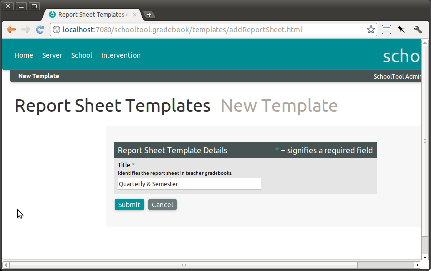
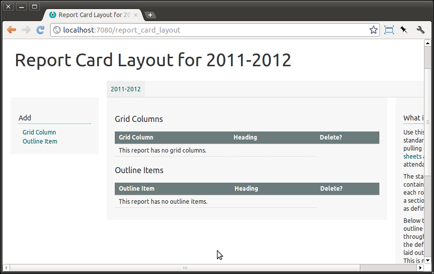

Report Sheets and Report Cards¶
You can use SchoolTool to generate report cards using traditional grades, scores on a list of standards, or other measures.
SchoolTool provides a mechanism called “report sheets” for collecting data about each student in each Section in a school. Most commonly, this is one or more grades for a Section, which will subsequently be published as a report card (and stored for other use, of course).
However, the system is designed to be very flexible. It leverages the features of the SchoolTool gradebook. You can use it for any data you’d like to collect regularly about student performance or behavior in all classes. You can use SchoolTool’s customizable score systems to gather non-traditional grading or assessment data, including comments.
The printed report cards are currently very simple. The intention is to develop them further based on feedback, so please let us know what you’d like to see on report cards and how they ought to look. We will respond to feedback.
Also, based on user feedback we shall develop other web and printed reports. Let us know what you need.
There are several steps involved in getting from the initial design of a report sheet to a printed report card.
As “manager,” define a report sheet template. This describes what scores will be collected on this report sheet. Typically, the template describes a report card that can be re-used in subsequent Terms or Years.
As “manager,” deploy the report sheet to the appropriate term or year. This places a copy of that sheet in each teacher’s gradebook for each Section for that term or year.
As “manager,” define the layout of the report card for the year.
Teachers enter scores in the relevant report sheet in each Section’s Gradebook.
Generate report card PDFs by Group or student.
Defining a Report Sheet Template¶
In our ongoing example, we’ve defined a year and two semesters within the year. At the example school, each semester the teachers report three grades: first quarter, second quarter and a final grade. So each report sheet will contain columns for these values.
Note that you can deploy multiple report sheets. So if you wanted you could deploy three sheets with one value per sheet. If you also had interim reports every three weeks, you could deploy those on the same report sheet, or on a separate one. You should experiment on a test server and see what maps best to your school’s operation.
To define a report sheet template, as “manager” go to School then Customize: Report Sheet Templates:
Click Add: Report Sheet Template and give the sheet a descriptive title (although avoid referring to the year if you want to re-use it):

Click Submit and you can add Activities to the sheet:
Next, you will define the Activities on what will appear as a worksheet in every Gradebook for the relevant terms.
Click Add: Report Activity:
Now we’ll define the first column on the report sheet – the first quarter grade. We’ll use the HAMS score system defined in Score Systems:
You can also just define a maximum and minimum score range instead of a score system.
Click Submit when you’re ready. Thus:
We’ll repeat the process for the second quarter and final grades:
If you would like to add a comment field, use the “Comment” score system.
Deploying a Report Sheet¶
Once you define a report sheet, you then want to place a copy of it in every teacher’s gradebook for each section they teach. We call this “deploying” the template. Once you deploy a template, subsequent changes to the template will not change the already deployed sheets. So make sure you’ve got the template the way you want it before you deploy it.
Again, it is best to experiment on a test server, or some kind of practice or backup database.
Report sheets may be deployed to individual Terms, or to Years (which will automatically include all contained Terms).
As “manager,” navigate back to the School view for the relevant year (in this case 2011-2012). At the bottom of the main content area is the section for deployed Report Sheets:
Click on Report Sheets. In this case, we want to deploy the “Quarterly & Semester” report sheet to both Terms in the Year:
And then click the Submit:
Laying Out a Report Card¶
While we’re here and logged in as “manager,” we might as well lay out the final report card. From School, Click Customize: Report Card Layout:

The basic report card layout is a grid above an outline.
Each row in the grid corresponds to a section the student attends, each column to an activity from a report sheet. So for a traditional report card containing our 1st and 2nd marking period grades we will Add: Grid Column:

Click Sumbit and thus:
Repeating for all three grades, both terms:
If you would like the results formatted as an outline list, you can follow the above process using Add: Outline Item. If you have comments, you can only add them to this section (they would not fit in the grid). You might also select this option if your score system uses long descriptive titles.
Entering Scores into a Report Sheet¶
Log out as “manager,” Log in as a teacher, and navigate to the Gradebook. We now have a new tab for our report sheet, Quarterly & Sem:
Enter the grades as you would in a regular Gradebook and hit Save.
Currently, if you want to add a comment score, you must click on a student name and select Score from the pop-up menu. This will allow you to enter all the scores for the student, including a full comment field. After a comment is entered for a student, you will see a “…” ellipsis in the relevant gradebook cell.
Repeat for each of the teacher’s sections in the term. In real life, if this was the end of the first quarter, only the first quarter grades would be entered.
Printing Report Cards¶
You can print report cards either for individual students, or for Groups.
Log out as a teacher and Log in as “manager.” Navigate to the School tab, click on People, and select a Person.
Click on Reports: Student Report Card:
A .pdf file will be downloaded. Open it and it looks like this (well, with a full set of courses and grades):
Basic, but it is a good start. Let us know what to add!
To generate a single .pdf with all the report cards for the members of a group (e.g., students), navigate to the group and hit the Reports: Student Report Card button.